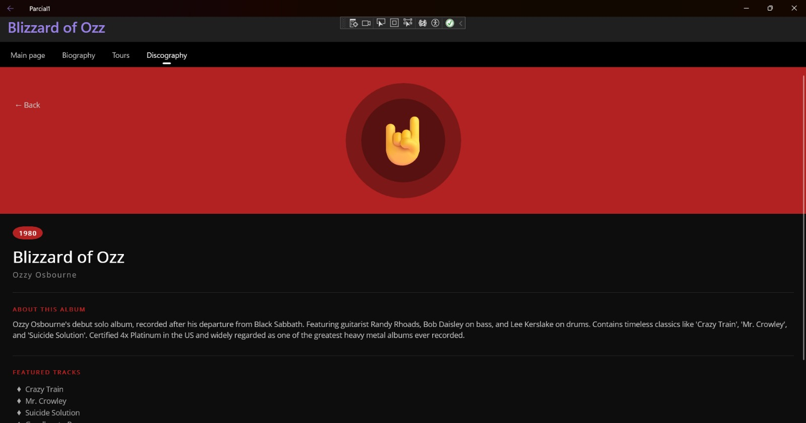

Parcial 1: Aplicación Informativa de un Artista
Aplicación móvil informativa sobre Ozzy Osbourne desarrollada en .NET MAUI. Organiza su contenido con navegación por pestañas en página principal, biografía, giras y discografía, con detalle de cada álbum.
.NET MAUI
C#
XAML
Shell TabBar
Android